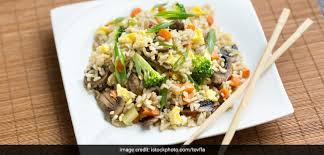

mushroomfriedrice

Ingredients:
- 2 cups cooked and cooled rice (preferably day-old rice)
- 200g mushrooms, sliced
- 1 small onion, finely chopped
- 2 cloves garlic, minced
- 1 small carrot, finely chopped
- 1/2 cup peas (fresh or frozen)
- 2 eggs, beaten (optional)
- 2 tablespoons soy sauce
- 1 tablespoon oyster sauce (optional)
- 1 tablespoon vegetable oil
- Salt and pepper to taste
- Green onions for garnish (optional)
Instructions:
- Prepare the Rice:
- If you're not using leftover rice, cook 1 cup of rice with 2 cups of water. Allow it to cool completely. Cold rice works best for fried rice as it's less likely to become mushy.
- Preheat the Pan:
- Heat a large skillet or wok over medium-high heat. Add the vegetable oil and let it get hot.
- Sauté the Aromatics:
- Add the chopped onions and garlic to the hot oil. Sauté for 2-3 minutes or until they become translucent and fragrant.
- Add the Mushrooms:
- Add the sliced mushrooms and cook for about 4-5 minutes, or until they release their moisture and turn golden brown.
- Cook the Vegetables:
- Add the chopped carrots and peas. Stir-fry for an additional 3-4 minutes, or until the vegetables are tender but still slightly crisp.
- Push Vegetables to the Side:
- If you're using eggs, push the vegetables to one side of the pan, creating a space for the eggs.
- Cook the Eggs (if using):
- Pour the beaten eggs into the space you created and scramble them. Once they're cooked, mix them in with the vegetables.
- Add the Rice:
- Add the cooked and cooled rice to the pan. Use a spatula to break up any clumps and mix it in with the vegetables and eggs.
- Season the Rice:
- Pour the soy sauce and oyster sauce (if using) over the rice. Continue to stir-fry for another 3-4 minutes, ensuring that the sauces are evenly distributed.
- Adjust Seasoning:
- aste the fried rice and add salt and pepper if needed. Remember, the soy sauce already contains salt, so be cautious with additional salt.
- Garnish and Serve:
- If desired, garnish with chopped green onions for extra flavor and color.
- Serve Hot:
- Serve the mushroom fried rice hot on its own or as a side dish with your favorite protein.Enjoy your delicious homemade mushroom fried rice! Feel free to customize it by adding other vegetables or protein sources like tofu, chicken, or shrimp if you'd like.